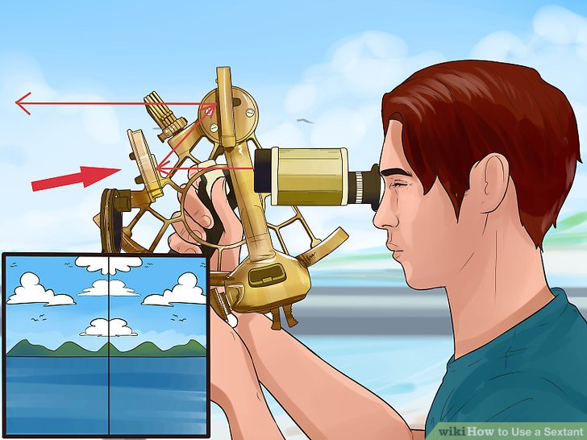

Sextant
A sextant is a doubly reflecting navigation instrument that measures the angular distance between two visible objects. The primary use of a sextant is to measure the angle between an astronomical object and the horizon for the purposes of celestial navigation. The estimation of this angle, the altitude, is known as sighting or shooting the object, or taking a sight.
Advantages
the sextant allows celestial objects to be measured relative to the horizon, rather than relative to the instrument. This allows excellent precision. However, unlike the backstaff, the sextant allows direct observations of stars. This permits the use of the sextant at night when a backstaff is difficult to use. For solar observations, filters allow direct observation of the sun.